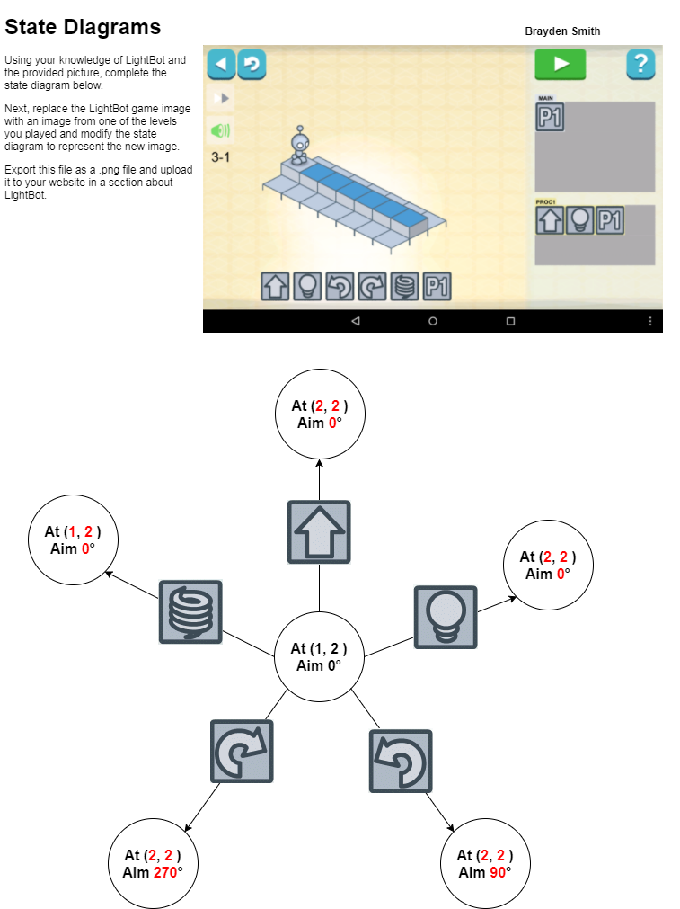

In the blown to bits reading it talked about how every thing on the interent is open to everyone. Nothing on the internet is safe even if you take every precaution posible. Some wesites have a private option but it does not actually keep it private, It more or less makes it less accesible. Once you put something on the internet it will be somewhere in a system somewhere. When we were little we thought once we clicked delete it was gone forever, but little did we know it is still somewhere on the internet tothis day
The Lightbot is like a computer because the only way to move him around is to command him to. With a computer it wont do anything without you telling it to do something. With the lightbot it had multiple progrmas you could code just like coding on a real coding system. Lightbot is not like a computer because he is not able to run without someone controlling him. We inputed codes to move lightbot to go turn on squares using differnt commands that were given to us. On a real system you would not be provided with commands
1. Its a good idea to program in small pieces because if something doesent work you khow where the erroe is.
2. Other tasks that take multiple tries are things like repairs for cars. Programming is similar because you are using a system to fix parts.
3. I worked well with a partner because when i couldnt see a problem he usally did. I could improve next time by helping him more.
4. With the more advanced computers it already looks like its doing a lot more than it actually is, and when its doing just as much as old computers it looks like more.
1. Because If all the sprites made a different noise at the same time you would not be able to tell which sprite is making what noise, and it would get annoying.
2.